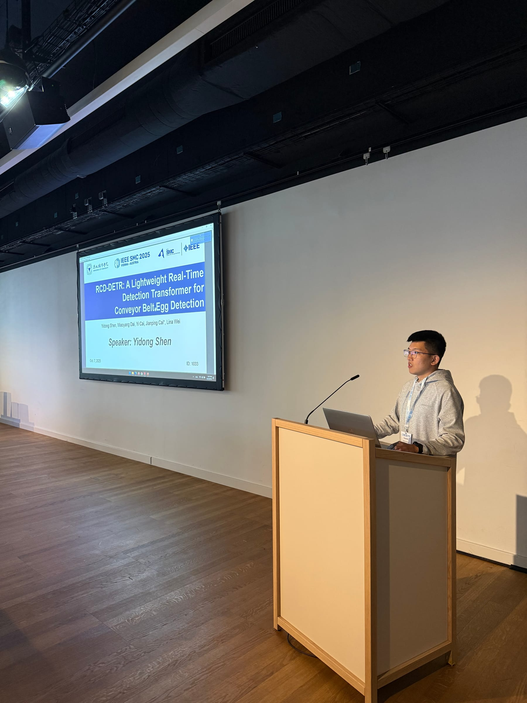

CV · 01Project media
Computer Vision · Edge AI
I build deployable perception systems across computer vision, embodied intelligence, and BCI—from lightweight models and edge inference to ROS 2 integration and robot action.
Research communication

Project index
This is the project structure first. Each card will be completed with your role, technical path, evidence, images, video, code, and links as materials are confirmed.
Computer Vision · Edge AI
Computer Vision · Cultural Heritage
3D Vision · Anthropometry
Industrial Vision · Robotics
Sonar · Signal Processing
EEG / fNIRS · Fatigue
BCI · Real-time Control
Quadruped · Perception
XR · Teleoperation
Manipulation · ROS 2
MindSpore · Edge Robotics
Robot Learning · ACT
Knowledge Q&A · Edge–Cloud